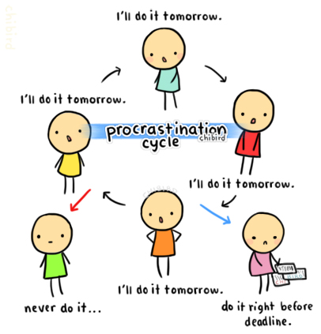
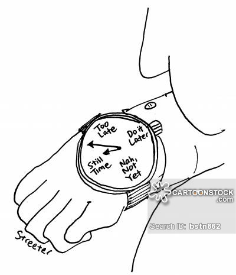

The International Procrastinators Association (T.I.P- I'll finish this later)
The 6 Types Of Procrastinators
Lying Procrastinators

The lying procrastinator is probably the most common one of the 6 types. it is simply where you say "I will do it" "I'll do it tomorrow" "Sometime later". Unfortunatly it is also the least effective, for the lying never actually gives you an excuse, so at some point you will be unfortunatly forced to do it
Watching Procrastinators
The Watching procrastinator is also very common, it is the type of procrastinator who says "after this episode" and then continues to watch it. this method is better but still not an amazing type of procrastination, for it doesn't take long for your parents to figure out what you're doing.
Eating Procrastinators
The eating procrastinator is a very effective tool of wasting time, for you see no one can argue that you're hungry, how can they know? so you may eat a little bit, and then a little bit more, and a little bit more, until you eat so much you can't do any more work. this is smart cause it's hard to call you out on it and you also get a meal also.
Sleeping Procrastinators
The sleeping procrastinator takes naps all the time, and it's smart! I mean who doesn't need sleep? everyone! you don't want to do a project while your tired. But also the sleeping Procrastinator is a hard one to pull off, for you need to actually sleep (or be good at faking it) other wise people will be able to call you on your bs right away.
Procrastinating Procrastinator

The procrastinating procrastinator is probably one of the most useful forms of procrastination on earth, and also one of the hardest ones to pull off. you see, procrastinating procrastination is when you say "I'll do it later", "there's tons of time", etc. and then you keep saying that until there isn't really time left and you say "oh well it's too late to do it now". this method is hard to do right, for if one thing is done wrong, people will see right through you and then you're S.O.L.
PANICING PROCRASTINATOR
the panicking procrastinator, the most useful, and the most dangerous of procrastination. you see the panic procrastinator is just the procrastinating procrastinator, except x569213748. it's when you wait until you don't have enough time, and then you freak, the hell, out. you start panicking, you scream yell run and make it seem like you're too mentally unstable to do this. this type is high risk, high reward. if done wrong can lead to dire consequences, for there are many pour souls who have tried and gone over the top, and now lie in a mental institution. so beware, a panic procrastination is not not be used lightly, and to never be abused

.jpg)
.jpg)
.jpg)
.jpg)